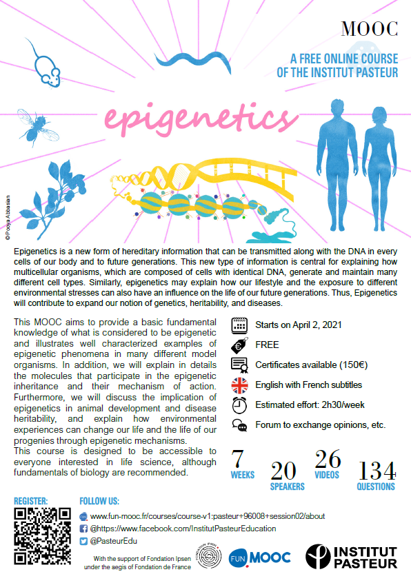

count: false class: left, bottom # Journal club ## March 8, 2021 <img src="bristol-logo.png" width="20%"> <img src="ieu-logo.png" width="17%"> --- layout: true .logo[.mrcieu[ MRC Integrative Epidemiology Unit ]] --- ## EWAS .striped[ | pmid|journal |variable |tissue | n|cohort |assocs |notes | |--------:|:----------------|:---------------------------|:-----------------------|----:|:------------------------|:-------|:----------------------------------------------| | 33661023|Epigenomics |cord blood vs placenta |cord blood and placenta | 444| |loads | | | 33646943|Elife |psychosis and schizophrenia |blood | 4483|7 cohorts |95;1048 |many scz assocs present in treatment resistant | | 33622391*|Clin Epigenetics |type 2 diabetes |blood | 3428|ALSPAC;LBC1936;Rotterdam |6 |3 novel | ] -- * Congratulations Diana, Gemma, Caroline and Hannah! --- ## Transcription clocks in C. elegans and humans benefits from 'binarization' > Meyer DH, Schumacher B. **BiT age: A transcriptome-based aging clock near the theoretical limit of accuracy**. Aging Cell. 2021 Mar 3:e13320. .ii[ **C. elegans** * 972 RNA-seq (20K genes) from C. elegans * Lifespan Methods * 'Binarized' transcription above/below median * Elastic net Results * W/o binarization: R<sup>2</sup> = 0.78 and MAD 0.71 days * With binarization: 576 genes, R<sup>2</sup> = 0.94 and MAD 0.32 years in independent data ] -- .ii[ **Humans** * 133 RNA-seq profiles of human dermal fibroblast cell cultures (age 1-94) Results * W/o binarization: 132 genes, R<sup>2</sup> = 0.63 and MAD 11.15 years * With binarization: 141 genes, R<sup>2</sup> = 0.92 and MAD 5.24 years in cross-validation Conclusion * Hypothesize that binarization reduces noise due to batch effects. ] --- ## Longitudinal DNAm age acceleration and cognitive decline > Vaccarino et al. **Epigenetic Age Acceleration and Cognitive Decline: A Twin Study**. J Gerontol A Biol Sci Med Sci. 2021 Feb 19:glab047. **Data** * 114 male twin pairs at ages ~56 and ~67.5 * Horvath, Hannum, PhenoAge, GrimAge, intrinsic (IEAA), extrinsic (EEAA) * Measures of executive function and memory function -- **Results** * No cross-sectional associations at baseline * Longitudinal within-pair differences - 1 year increase in Horvath AA = 3% executive decline (95% CI, 1-5) - 1 year increase in Horvath AA = 2.5% memory decline (95% CI, 0.01-4.9) --- ## Cancer risk and DNA methylation in blood > Domingo-Relloso et al. **DNA methylation and cancer incidence: lymphatic-hematopoietic versus solid cancers in the Strong Heart Study**. Clin Epigenetics. 2021 Feb 25;13(1):43. **Data** * 2324 Strong Heart Study participants * Lymphatic-hematopoietic (41), solid (394), overall (414) cancer * Mean 15 years follow-up * Test data: Framingham Heart Study. -- **Methods** Elastic net **Results** * 126-CpG model for lymphatic-hematopoietic cancer<br> c-index 0.89 (0.76 for standard risk factors; 0.5 in training data) * 396-CpG model for solid cancer<br> c-index 0.75 (0.69 for standard risk factors) * 414-CpG model for overall cancer<br> c-index 0.74 (0.69 for standard risk factors) --- ## Cell-free DNA methylation and breast cancer > Liu et al. **Genome-wide cell-free DNA methylation analyses improve accuracy of non-invasive diagnostic imaging for early-stage breast cancer**. Mol Cancer. 2021 Feb 19;20(1):36. cfDNAm = cell-free DNA methylation profiles by whole genome bisulfite sequencing **Training set** cfDNAm of 140 patients (70 benign/70 malignant) **Testing set** cfDNAm of 50 patients (25 benign/25 malignant) -- **Results** * Mammography and ultrasound AUC = 0.78 * cfMeth score AUC = 0.81 (95% CI, 0.69-0.93) * Combined AUC = 0.93 (95% CI, 0.84-1) --- ## Multi-omics in a single cell > Wang et al. **Single-cell multiomics sequencing reveals the functional regulatory landscape of early embryos**. Nat Commun. 2021 Feb 23;12(1):1247. **scNOMeRe-seq** nucleosome occupancy, methylome and RNA expression sequencing *in the same cell* --- ## Skewness of X-chromosome inactivation > Mengel-From et al. **Skewness of X-chromosome inactivation increases with age and varies across birth cohorts in elderly Danish women**. Sci Rep. 2021 Feb 22;11(1):4326. **X-chromosome inactivation** In females, one of the two X chromosomes is inactivated. -- In a population of cells from a female, approximately half have the maternal copy inactivated. -- **Skewness of X-chromosome inactivation** Departure from 50:50 ratio. In young women, this is related to genetic disorders. -- .ii[ **Longitudinal** - 67 women in 70s and 80s - skewness measured 2 times, 10 years apart - result: 16% of women developed skewness ] -- .ii[ **Cross-sectional** - 293 women born in 1917-23, 1931-37 - skewness measured in 70s - 212 women born in 1895, 1905, 1915 - skewness measured at ~100 - result: greater age-adjusted skewness in women born earlier ] --- .ii[  ] .ii[ <br> <br> <br> <br> "we had in total 7010 registered students from 120 countries" "start on April 2 and will stay for two months and the registration will stay open until May 26" Teaser on youtube https://youtu.be/dBTkwmi1ANQ Registration link https://www.fun-mooc.fr/courses/course-v1:pasteur+96013+session02/about ] --- ## Pandemic stress management system .center[ <iframe width="728" height="422" src="https://www.youtube.com/embed/videoseries?list=PLR8S5PxhFhlyQ-uHeQMFMUqBF4IhczVMR&rel=0&showinfo=0&controls=0&autohide=1" frameborder="0" allow="accelerometer; autoplay; clipboard-write; encrypted-media; gyroscope" allowfullscreen></iframe> **Videography** Sparrow and Glade Suderman <br>**Acro Guru** Rachel Baird https://www.instagram.com/adultacrobaticsathome/ ]